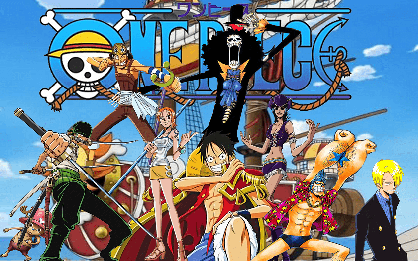

Personal Recommendations
Below is a list of three of my favorite shows that I would recommend for others watch
-
Monster
Monster is a psychological story full of suspense that details details the journey of doctor Kenzou Tenma, an elite neurosurgeon and the head of neurosurgery at a hopital in Dusseldorf, Germany, after he makes a decision based on his ideals on what a doctor should do that drastically alters his life and career. This show is highly recommended for those interested in a serious plot, a thrilling mystery, and a psychological crisis of conscience. Monster has 74 episodes so prepare to dedicate some time watching it, but it will all be worth it as this is one of the few shows I can say is riveting throughout every single episode.
-
Great Teacher Onizuka
Eikichi Onizuka is a young man who's ambition in life is to be the greatest teacher in the world; a rather odd career choice for someone who was a delinquent in school and even the leader of a violent biker gang for several years. Onizuka strives to bring out the full potential in his students and will stop at nothing short of death to do right by his students despite being discouraged by other more traditional school staff who have written off his students. This show would be very popular with those who enjoyed the film Stand and Deliver as they both share similar values. Great Teacher Onizuka is a good medium length show at 43 episodes long.
-

One Piece
One piece is one of the longest running shows with currently nearly 900 episodes aired and many hundred more until the story is complete. This show follows Monkey D. Luffy, a rather strange pirate, who sets sail to become the king of pirates. He gathers his crew and sets off to the grand line, the most treacherous ocean, in search of the world greatest pirate treasure, the titular one piece, that is the culmination of all the treasure collected by the previous pirate king over 20 years ago. Do not let the long episode count dissuade you from watching, this is undeniably one of the most popular anime shows ever released and it has been going continuously for 20 years. This show is perfect for those that enjoy shows about adventures in strange lands and meeting strange and unique characters.